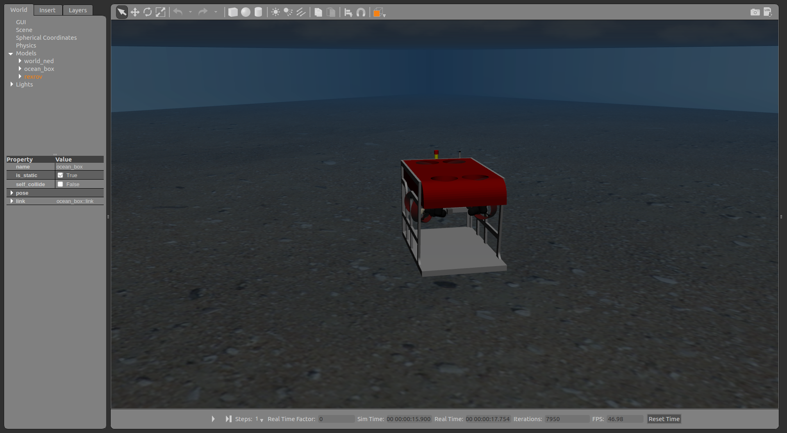
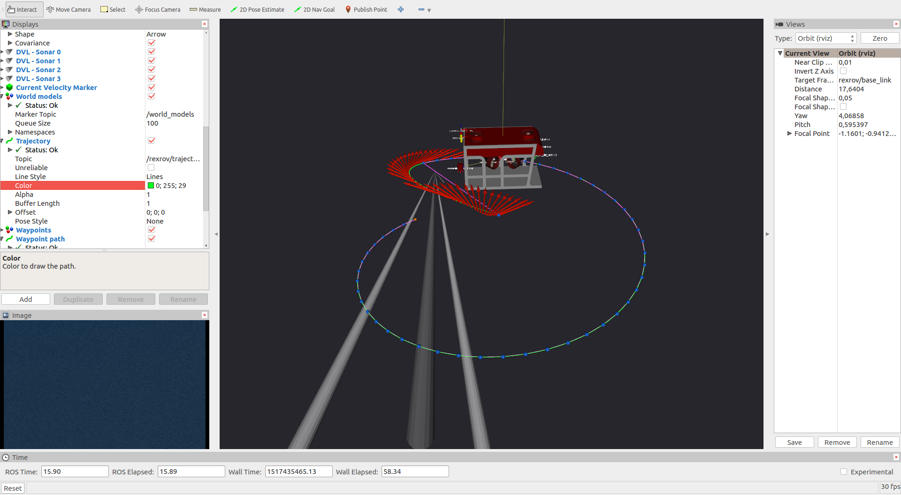

How to use the wrapper class for repetitive simulation runs¶
One of the good advantages of simulation implemenations is the possibility of evaluating the complete closed-loop system under several different scenarios that would be difficult to reproduce in real experiments. That is the case for reinforcement learning and optimization algorithms, to name a few use-cases where the simulation could be used for system evaluation. Even though that is a promising application of any Gazebo/ROS based simulation, the actual implementation of a wrapper with which the simulation can be started and terminated in a controlled environment involves a lot of attention in order to guarantee that all ROS nodes can be properly started. For this purposes, a set of nodes and process managers have been implemented as part of the uuv_simulation_evaluation. Be sure to install the package in your catkin workspace
cd ~/catkin_ws/src
git clone https://github.com/uuvsimulator/uuv_simulation_evaluation.git
then build the workspace:
cd ~/catkin_ws
catkin build
source devel/setup.bash
Note
The uuv_simulation_evaluation package also requires extra dependencies that can be installed as follows:
pip3 install smac
Starting and terminating the simulation using a timeout¶
Per default, it is not possible to set a termination time for the simulation. This is acchieved by a very simple ROS node that is launched by the file below
<launch>
<arg name="timeout" />
<node name="simulation_timeout" pkg="uuv_simulation_wrapper" type="set_simulation_timer" required="true"
output="screen">
<rosparam subst_value="true">
timeout: $(arg timeout)
</rosparam>
</node>
</launch>
and starts the set_simulation_timer Python ROS node. This node will simply read simulation time from /clock and use the timeout input argument to count down the simulation time. Since the node is initialized with the required flag, all ROS processes are terminated once the timeout is reached. The only requirement is that this node has to be called with the rest of the processes running the simulation (including the Gazebo process) to terminate the simulation at a specified timeout, namely start the set_simulation_timer node in the launch file.
Note
For more information on the required flag, check the official ROS wiki page.
One small example is starting the empty underwater world and setting a simulation timeout in a launch file as follows
<launch>
<include file="$(find uuv_descriptions)/launch/empty_underwater_world.launch">
<arg name="gui" value="true"/>
<arg name="paused" value="false"/>
</include>
<include file="$(find uuv_simulation_wrapper)/launch/set_simulation_timer.launch">
<arg name="timeout" value="10"/>
</include>
</launch>
This example will lead to the Gazebo simulation being terminated after 10 seconds. One further problem can appear when starting a large number of ROS nodes that depend on Gazebo’s simulation. Gazebo’s process can often take some time to be initialized and some services and topics might not be available right away until all plugins have been set in place. That can lead to some issues with some ROS nodes that will find that services and topics are unavailable right after starting the simulation. That is easier to control when starting all nodes manually using the command line, but can be an issue when setting up automated simulation runs. For this issue, one further ROS node can be used to unpause the Gazebo simulation after a timeout, making it easier to control the startup process. This can be seen in the following sample launch file
<launch>
<include file="$(find uuv_descriptions)/launch/empty_underwater_world.launch">
<arg name="gui" value="true"/>
<arg name="paused" value="true"/>
</include>
<include file="$(find uuv_simulation_wrapper)/launch/set_simulation_timer.launch">
<arg name="timeout" value="10"/>
</include>
<include file="$(find uuv_simulation_wrapper)/launch/unpause_simulation.launch">
<arg name="timeout" value="5"/>
</include>
</launch>
What this example does is unpause the simulation after 5 seconds and helps to control the startup of all nodes that use the simulation time for their cycles. Is essential in this case to start the Gazebo world with the paused flag set to true.
<arg name="paused" value="true"/>
This example can be run using the following sample launch file
roslaunch uuv_simulation_timer_example start_timer_example.launch
Using the Python wrapper to run a simulation¶
In the uuv_simulation_wrapper package, a simulation wrapper is implemented as a part of the uuv_simulation_runner Python library that can be used to start a simulation and evaluate its resulting ROS bag from a Python application. Some configuration is needed to acchieve it, but an example is available in the catkin package uuv_simulation_runner_example. The folder structure of the this demonstration consists of a catkin package set as
uuv_simulation_runner_example
|-- config
|-- task.yml
|-- launch
|-- start_simulation.launch
|-- scripts
|-- run_grid_search
`-- CMakeLists.txt
`-- package.xml
The different elements necessary to make the evaluation using the wrapper are described below.
Simulation launcher¶
The launch file start_simulation.launch must contain all the nodes and elements to start the simulation that needs to be evaluated. In this example the Gazebo world starts with the simulation timers presented in the previous section, a RexROV vehicle is spawned with a PID controller node. A helical trajectory then is initialized and a constant current is applied to the scenario. Some of the elements of the launch file that will be common to other use-cases are described below.
Recording the results
The evaluation of the simulation is achieved by analyzing the resulting ROS bag. The simulation wrapper expects the launch file to have an input string bag_filename to set, and it can be defined in the launch file as follows
<arg name="record" default="false"/>
<arg name="bag_filename" default="recording.bag"/>
In the launch file there must be also an rosbag recording node being started having the vehicle’s states and other topics as an input as in the example below
<node pkg="rosbag" type="record" name="recording"
args="record -O $(arg bag_filename)
/rexrov/dp_controller/trajectory
/rexrov/dp_controller/reference
/rexrov/pose_gt_ned
/hydrodynamics/current_velocity
/rexrov/thruster_manager/input
/rexrov/wrench_perturbation
/rexrov/thrusters/0/thrust
/rexrov/thrusters/1/thrust
/rexrov/thrusters/2/thrust
/rexrov/thrusters/3/thrust
/rexrov/thrusters/4/thrust
/rexrov/thrusters/5/thrust
/rexrov/thrusters/6/thrust
/rexrov/thrusters/7/thrust"
if="$(arg record)"/>
The record flag is optional but useful while testing the launch file before running the simulation with the wrapper to avoid recording ROS bag unnecessarely.
Note
The pose of the vehicle can be recorded with respect to Gazebo’s default inertial frame world (that uses the East-North-Up convention) by using the /<vehicle>/pose_gt topic or with respect to the generated world_ned frame (that uses the North-East-Down convention) by using /<vehicle>/pose_gt_ned.
For this the vehicle must use the sensor plugins included in uuv_sensor_ros_plugins package and the static TF frame world_ned must exist (which is already done when starting one of the Gazebo worlds included in the UUV simulator package).
Check this Wikipedia page for more information on both conventions.
Note
The topic /rexrov/wrench_perturbation is generated when using the disturbance manager node described in Applying disturbances during the simulation.
Turning off the frontend during the evaluation
To avoid unnecessary overhead when doing repetitive evaluations of the same scenario, a flag can be given as an input of to turn off the Gazebo client and other visualization tools as RViz. In the example the flag is given as
<arg name="gui" default="true"/>
and is used as
<include file="$(find uuv_descriptions)/launch/empty_underwater_world.launch">
<arg name="gui" value="$(arg gui)"/>
<arg name="paused" value="true"/>
</include>
<node name="rviz" pkg="rviz" type="rviz" output="screen"
args="-d $(find uuv_gazebo)/rviz/controller_demo.rviz"
if="$(arg gui)"/>
Having the flag as an input is useful when running the launch file without the evaluation to check the scenario, namely
roslaunch uuv_simulation_runner_example start_simulation.launch gui:=true record:=false
Having the variables to be varied in the different evaluations as an input
For the simulation wrapper to provide different variables that can influence the simulation, these variables have to be configured as input arguments on the launch file. In this example presented here, the vehicle will be set to follow a helical trajectory under constant currents of different magnitudes. The ROS node that generates the constant current is the following
<include file="$(find uuv_control_utils)/launch/set_timed_current_perturbation.launch">
<arg name="starting_time" value="0.0"/>
<arg name="end_time" value="-1"/>
<arg name="current_vel" value="$(arg current_vel)"/>
<arg name="horizontal_angle" value="$(arg horizontal_angle)"/>
</include>
and to change the magnitude of the current, the current_vel must be one input argument of the launch file, namely
<arg name="current_vel" default="0.0"/>
The default value is set to zero, but the simulation wrapper is then capable of calling the launch file in a separate process giving current_vel as an input.
Simulation timers
As explained before, it is crucial to include the simulation timer and unpause simulation nodes so that every simulation run to have the same time span.
<include file="$(find uuv_simulation_wrapper)/launch/set_simulation_timer.launch">
<arg name="timeout" value="$(arg timeout)"/>
</include>
<include file="$(find uuv_assistants)/launch/unpause_simulation.launch">
<arg name="timeout" value="$(arg unpause_timeout)"/>
</include>
The Gazebo world has to be also initialized using the paused flag as well to the unpause simulation node to work.
<include file="$(find uuv_descriptions)/launch/empty_underwater_world.launch">
<arg name="gui" value="$(arg gui)"/>
<arg name="paused" value="true"/>
</include>
Testing the simulation
By running the launch file as
roslaunch uuv_simulation_runner_example start_simulation.launch gui:=true record:=false
Both the RViz and Gazebo screens should appear as shown below.
 Simulation wrapper task file¶
The task.yml file contains a set of parameters necessary for the simulation wrapper to run the simulation in a separate process.
execute:
cmd: roslaunch uuv_simulation_runner_example start_simulation.launch
# The parameters below are named as in the input arguments of the launch
# file. List below all parameters that you wish to override from default
# values set in the launch file.
# IMPORTANT: Do not add below the parameters that you wish to vary in your
# script/optimizer/client. They will be given to the simulation wrapper
# in the Python script as an input
params:
# Gazebo client and RViz are not initialized when running the iterations
# using the simulation wrapper
gui: false
timeout: 70
# Recording the simulation is necessary for the evaluation step later
record: true
bag_filename: recording.bag
current_on: true
id: tutorial_simulation_runner
The parameters fields are described below:
- cmd: Command to call the launch file.
- params: List of parameter to be overriden during the evaluations. Setting the gui to false and record to true are some examples.
- id: An ID for the evaluation being performed.
Simulation runner script¶
The code that uses the simulation wrapper can be seen below, with a step-by-step explanation of its functionalities in the comments. In this example, the Evaluation class is used to read the ROS bag and generate performance indicators, along with plots, but any script can be used for that purpose.
#!/usr/bin/env python
# Copyright (c) 2016 The UUV Simulator Authors.
# All rights reserved.
#
# Licensed under the Apache License, Version 2.0 (the "License");
# you may not use this file except in compliance with the License.
# You may obtain a copy of the License at
#
# http://www.apache.org/licenses/LICENSE-2.0
#
# Unless required by applicable law or agreed to in writing, software
# distributed under the License is distributed on an "AS IS" BASIS,
# WITHOUT WARRANTIES OR CONDITIONS OF ANY KIND, either express or implied.
# See the License for the specific language governing permissions and
# limitations under the License.
import rospy
from rospkg import RosPack
import argparse
import yaml
import numpy
import os
from uuv_simulation_runner import SimulationRunner
from uuv_bag_evaluation import Evaluation
PKG = 'uuv_simulation_runner_example'
import roslib; roslib.load_manifest(PKG)
# Find the path to the uuv_simulation_runner_example package
ROSPACK_INST = RosPack()
ROOT_PATH = ROSPACK_INST.get_path(PKG)
# Find the path to the task.yml file with the parameter for the
# simualtion scenario
DEFAULT_TASK = os.path.join(ROOT_PATH, 'config', 'task.yml')
# Path to the results folder to be created (here it will be created in
# the package folder, but it can be placed anywhere)
DEFAULT_RESULTS = os.path.join(ROOT_PATH, 'results')
if __name__ == '__main__':
parser = argparse.ArgumentParser(description='Simulation runner tutorial')
parser.add_argument(
'--task',
type=str,
default=DEFAULT_TASK)
parser.add_argument(
'--output_dir',
type=str,
default=DEFAULT_RESULTS)
parser.add_argument(
'--n_points',
type=int,
default=10)
# Parse input arguments, rospy.myargv removes the default inputs
# that ROS uses when running this script with rosrun
args = parser.parse_args(rospy.myargv()[1:])
assert os.path.isfile(args.task), 'Task file is not a valid file'
assert '.yml' in args.task or '.yaml' in args.task, 'Task file is not a YAML file'
assert args.n_points > 0, 'n_points must be a positive integer'
# In this example, the simulation will be executed using increasing values for the
# current velocity magnitude, which will be generated as Vc = (u, 0, 0) m/s with
# respect to the inertial frame.
# This is one example, but any parameter can be given to the simulation as long as
# it is set as an input argument in the simulation's launch file
for c_vel in numpy.linspace(0, 1, args.n_points):
# Set the parameters that are going to be evaluated, the key of the parameter
# in the dictionary must be equal to the name given to the input parameter in the
# launch file
# The input parameters can be scalars, lists or booleans
params = dict(current_vel=float(c_vel))
# Create a simulation wrapper
# record_all_results can be set to False if the results folder should be
# deleted after each iteration. It is good to set it to False in the case
# you want to run many iterations of the simulation scenario and avoid
# multiple ROS bags from being stored on the disk.
runner = SimulationRunner(params,
args.task,
args.output_dir,
record_all_results=True,
add_folder_timestamp=True)
# Run the simulation
runner.run(params)
# Evaluate the recording.bag, the time_offset allows the user
# to ignore a given amount of seconds at the beginning of the
# recording of each topic.
sim_eval = Evaluation(runner.recording_filename,
runner.current_sim_results_dir,
time_offset=0.0)
# Compute all KPIs from the recording.bag
sim_eval.compute_kpis()
# Only use save evaluation to store the KPIs and the plots after each
# iteration. You can also use only save_kpis() to store only YAML files
# with the computed KPIs.
sim_eval.save_evaluation()
# Printing all KPIs
print('Simulation KPIS, current_vel=' + str(c_vel))
for tag, value in sim_eval.get_kpis().items():
print('- ' + tag + '=' + str(value))
del runner
del sim_eval
Running the example¶
As shown in this line of the script shown in the last section shows
DEFAULT_RESULTS = os.path.join(ROOT_PATH, 'results')
the results folder will be created in the uuv_simulation_runner_example folder. The results folder in this case will have one folder for each simulation run containing ROS bag, plots and log files for the each simulation scenario run with a different current velocity magnitude. To run the example, use the following command
rosrun uuv_simulation_runner_example run_grid_search --n_points <N_POINTS>
Note
The Python simulation wrapper assigns a random port to the ROS master and Gazebo for each time a new simulation run is done and locks the ports for the duration of the simulation. That allows several instances of the simulation to be started at the same time using this wrapper.